Chapter 1
Digital System
digital system定义：输入discrete inputs、discrete internal information (system state)，产生discrete ouputs

Block diagram:

ADC (Analog Digital Converter)将连续的模拟信号转换为离散的数字信号
information representation
01信号通过电压高低来实现


中间非HIGH非LOW部分叫threshold region，属于未定义区域，当V落在此区域时称为float，float状态下输出不定
宽进严出：input的信号可能会有噪音、污染，降低==output tolerance==，即降低output的容错率，增加了抗干扰能力，可以为下个device提供更大的容错空间
number system - representation¶
special power of 2:
- 210=1024 is Kilo, "K"
- 220 is Mega, "M"
- 230 is Giga, "G"
- 240 is Tera, "T"
binary arithmetic¶
- 减法：类似于加法会产生carry，减法会产生borrow in，给出两个数的2个binary digits (X, Y)，加上两个数上一位的borrow in，可得如下真值表

- 乘法：乘法可以用竖式计算

进制转换¶
- 转换integer part，略
- 转换factional part。不断给小数部分乘上new radix，新产生的整数部分digits即为相应bit，再取剩下的小数部分继续......
LSB: least significant bit
binary coding¶
目的：用二进制编码来表示数据类型
data type有numeric类型的和non-numeric类型的，都可以用二进制编码表示
例子1：Binary Coded Decimal (BCD)
| Decimal | 8,4,2,1 | Excess3 | 8,4,-2,-1 | Gray |
|---|---|---|---|---|
| 0 | 0000 | 0011 | 0000 | 0000 |
| 1 | 0001 | 0100 | 0111 | 0001 |
| 2 | 0010 | 0101 | 0110 | 0011 |
| 3 | 0011 | 0110 | 0101 | 0010 |
| 4 | 0100 | 0111 | 0100 | 0110 |
| 5 | 0101 | 1000 | 1011 | 0111 |
| 6 | 0110 | 1001 | 1010 | 0101 |
| 7 | 0111 | 1010 | 1001 | 0100 |
| 8 | 1000 | 1011 | 1000 | 1100 |
| 9 | 1001 | 1100 | 1111 | 1101 |
-
Excess3就是在8421基础上加3。这样编码范围是3-12，前后各有3种组合没用，优点是09,18,27,36,45的表示互补，complement code；
-
8,4,-2,-1的优点也是complement code；
- 格雷码(Gray)的特征，Two successive values differ in only one bit，相邻两数的编码只有1bit不同，可以应用于optical shaft encoder，一种测量角度的仪器

如左图，在转到分界线时，由于有多个环的颜色会变，而边缘设计在实际中不可控，所以每个环的变色顺序是不定的，于是变换的瞬间output是不定的；而Gray码就很好地避免了这个问题。
binary code到Gray code的conversion规则：高一位+本位（舍弃进位）得到Gray本位

例子2：number of elements represented。例如，表示4个elem我们可以用2bit；也可以用4bit (0001, 0010, 0100, 1000)，每个elem只有1 bit为1，这叫做==one-hot code==
BCD码的运算（加法）

加密
校验(Error detection) Techniques:
- Parity是额外append到code尾部的bit，为了让code中置1的bit数为even或odd。可以监测到single bit error。
- 分为Odd Parity和Even Parity，加在最前/后面 (most/least significant bit)。若为Odd，则code中共有奇数位1；为Even则有偶数位1。
Chapter2¶
implementation of AND/OR/NOT with BJT¶

basic logic gate¶

basic gate :
AND、OR、NOTuniversal gate :
NAND、NORother gate :
EX-OR、EX-NOR
Gate delay¶
在实际的门电路中，input的改变并不会导致output立刻改变，会有一定的延迟，这个延迟就是gate delay

logic diagram and expression¶
逻辑表达的4种方式
- 外围观测，由电路功能唯一确定。有truth table、waveform
- 逻辑实现，有多种实现方式，不唯一，因而在实际实现功能时更加灵活，有优化空间。有Equation、Logic diagram
Bool Algebra¶
布尔代数是一种代数结构，它定义在一个二元集合{0, 1}上，有三种运算 +, · ,overbar
some basic laws

bool algebra的对偶性(duality rule)
Review: 1. Proof of equality of expression 2. Simplification
Canonical forms for comparison of equality: SOM/ POM¶
SOM <-> POM之间的conversion：POM的product由使得F取0的code组合（相乘）而成；SOM的sum由使得F取1的code组合（相加）而成。所以若SOM取了m0,m2,m3,m6，则POM取M1,M4,M5,M7 $$ F=SOM=\sum_{i\in{A}}m_i\ \bar{F}=\prod_{i\in A}\bar{m_i}=\prod_{i\in A}{M_i}\ F=POM=\prod_{j\notin A}M_j $$
Two-level logic with canonical form
一层AND，一层OR；这种logic不是最简形式，所以有Standard form :
SOP :AB'C + B，每个product必须为单项乘积，也即每个Minterm中可以缺项
POS : (A+B)(A+C)，每个sumt必须为单项之和，也即每个Maxterm中可以缺项
Distinct cost criteria
- Literal cost：literal (variable)的数量，也即第一层的引脚数
- gate input cost： + L (literal count) + G (gate input count)：组合项个数（单项literal除外） + GN (gate input count with NOTs)：G+含非literal的个数，由于非门一般可共享，所以每种非literal算一次即可
对于SOP和POS表达式，总的cost（或者说复杂度）是下面三者之和：
- all literal appearances (L)
- the number of terms excluding single literal terms (G)
- optionally, the number of distinct complemented single literals (GN)
Note: 最后组合成表达式F不算在G中
Example : $$ F=(\bar{A}\bar{C}+AC)(B+\bar{D}) $$ L共有6个，G=第一个括号中的2个term+第一个括号1个整体term+第二个括号1个整体term+L=10 $$ F=\bar{A}\bar{C}(B+\bar{D})+AC(B+{D}) $$ L共有8个，G=第一个括号1个整体term+第一项1个整体term+第二个括号1个整体term+第二项1个整体term+L=12
布尔函数的整体optimization步骤¶
- 化为==Canonical form==，即SOM/POM
- 画出卡诺图 (K-map)
- 利用minimization theorem得到==standard form== (SOP/POS)
- Optional，multiple-level optimization，合并同类项
如下图：

Minimization theorem:
\(XY+\bar{X}Y=Y\), and dual form \((X+Y)(\bar{X}+Y)=Y\)
即，消掉 2n 项term，得到 1 项减少了n位literal的term
K-maps and truth tables¶
卡诺图(K-maps)是truth table的一种二维排列，相邻方块对应的code只有1bit不同。卡诺图的行和列都是按Gray code来编排的，这样才能保证上述条件。
二维卡诺图

三维卡诺图

更清楚的表达方式

对于3变量卡诺图
-
1个方块代表1个由3个变量组合成的minterm
-
2个相邻方块代表1个由2个变量组合成的term
-
4个相邻方块代表1个single literal term
4变量卡诺图

5变量卡诺图（拓展）
先画出4变量卡诺图，然后再关于竖线的画一幅镜像对称卡诺图，在两张卡诺图中的分别标注第5个变量为0和1，每个minterm的5个相邻term就是单张4变量卡诺图的4相邻term再加上镜像对称的term。如图：

Don't cares :在实际中不会出现的term，在K-map中标为x，可任意置1或置0
- K-maps简化的原则:
- 一次圈相邻的2n个项（一排或一列或2x2方块或2x4方块）
- 首尾可以相接（上下、左右在折叠后相邻）
- 尽可能圈最大的
- 两个圈可以重叠，即一个minterm可以duplicate
Note: 一般会考察4维，即4个变量WXYZ
- K-map的好处（省流：机械、系统，不用动脑）
- 更简单、不易出错
- 不需要记住布尔函数的各种定律
- 步骤更少
- 总能化到最简
- K-map的劣势
- 随着维数增加，会变得很复杂
- 化成的最简表达式可能不唯一，例如下图

- 最多化简5变量表达式
-
不能形成自动化的算法 4. 蕴含项、主蕴含项、基本主蕴含项 (implicants)
异或、同或门
- 校验
-
S放大器(Buffer)
-
三态门(3-state Buffer)：多个三态门的output连在一起，接入bus
## Chapter3 Logic Design
### Design Procedure（电路设计流程）
-
specification
规定input和output是什么，以及其对应的变量，哪个状态对应高电平、哪个状态对应低电平
-
formulation
写出布尔函数的表达式
-
optimization
逻辑表达式的优化
2-level电路优化利用卡诺图
muti-level电路优化，通过共享不同output变量之间相同的term；也可以称为变量代换(transformation)，见下图例子


-
Technology mapping
工艺映射
-
Verilog Programming
### Hierarchical Design（层级化设计）
一般的设计模式有2种， + Top-down（自顶向下）：从抽象的高层次设计逐级分解 + Bottom-up（自底向上）：从最基本的功能块开始搭建更复杂电路
例子见下图

### Technology Parameters（工艺参数）
用于衡量集成电路性能的参数
-
Fan-in和Fan-out
-
Fan-in： 一个逻辑门能接受的input数量上限
-
Fan-out：一个output可以连接的input数量 (load，负载)上限
Fan-out的2个参数：
-
standard load
Fan-out可以用 standard load 来衡量，而 standard load 是指一个非门贡献的负载
-
Transition time
一个逻辑门的output从H变到L（从L到H）所需的时间，记作tHL (rise time)/tLH (fall time)

Fan-out即：在未超过最大Transition time的情况下，能驱动的最大的standard load数量
-
-
Propagation delay
逻辑门input改变传播到output所需时间，记作tPHL/tPLH，其均值或较大值记作tpd
注：H到L和L到H都是相对于output而言

两种inherent delay模型：
-
Transport delay
input的改变在定时长后传播到output
-
Inertial delay
考虑Transport delay后，input的脉冲还必须持续一定时间才能传播到output，最少持续时间称为rejection time
两种模型的区别

除去inherent delay外，fan-out也会影响propagation delay，例如tpd =0.07+ 0.021 SL
-
-
Circuit delay
由于延时不同，出现的毛刺(glitch)，本质上还是由于propagationdelay导致

-
Cost
与逻辑门占据的区域 (chip area) 成正比
Ignoring the wiring area, the gate area is roughly
proportional to the gate input count
忽略wiring area，gate area大约与gate input数成正比
### Positive and Negative Logic
-
Positive Logic
-
HIGH (more positive) signal表示1
-
LOW (less positive) signal表示0
-
Negative Logic
-
LOW (more negative) signal表示1
- HIGH (less negative) signal表示0
-
正逻辑的与门电路实现和负逻辑的或门电路实现
### Technological mapping
将工艺无关的逻辑描述转变成特定工艺实现；它是逻辑综合的重要环节
一个关键操作就是识别逻辑等价关系 (logic equivalence)，将初始逻辑描述映射为目标工艺
-
mapping to NAND
- 将
AND和OR替换为NAND和NOT门

-
将
inverter推到fan-out的多条支路中（降低fan-out） -
消去成对的
inverter


- 将
-
mapping to NOR
类似于mapping to NAND
-
Verification
- 手动验证
- 仿真
### Functional blocks
基础函数块有value-fixing(F=0 or 1)、transferring (F=X)、inverting(F=X')、Enabling(F=X*EN or F=X+EN')
对于Enabling来说，EN为1则使能，允许信号通过；EN为0则不使能，此时output不确定，可为1可为0，若采用三态门实现则呈现Hi-Z（高阻态）
-
Decoder（译码器）
将压缩的编码转化为稀疏的编码，少输入->多输出
Variable decoder (Minterm detector)：将input对应的minterm项对应的output设为1，每种input组合仅有1位output为1
当decoder的输入位数过多时，可采用层级设计(divide-and-conquer)
-
Encoder（编码器）
压缩采样得到的信息，节省带宽
每次仅有1位input为1
独热码->二进制码 or BCD码
Ex :
-
design with one-hot code : 用特征位（变量）代替卡诺图进行表达式优化
-
Priority encoder : selects the most significant input position

-
-
Multiplexer（信号选择器）

构成：
- infomation inputs : 2n bits
- Control signals (selection inputs): n bits
- Single output : 1 bits
实现：
用decoder + AND/OR gate实现，通过decode Control signal来enable
Ex : 64-to-1-line Multiplexer

也可以进行Multiplexer Width Expansion，拓展input的位宽，选择其中一个向量；
此外，MUX也可以用decoder + 三态门来实现，节省空间（三态门自身特性）
功能：
n位控制信号的MUX可实现n变量的布尔函数
- 具体实现：对于一个函数y，将MUX相应的information input端口接到真值表中对应的minterm的函数值（0或1），如下图的Y, Z

-
优化：可以优化为(n-1)-to-1-line multiplexer，思路是降维卡诺图
- 前(n-1)个变量作为selection input
- 根据表达式，设最后一个变量为X，每一个information input端口接入1/0/X/X'其一
-
相较于门电路的优点：
当我们想改变功能，构造一个新函数时，门电路方法要大改(OR gate level)，而MUX只需要将information input端口根据真值表进行改变，更加灵活
-
Demultiplexer（信号分离器）

如图，signal由code控制，从其中一路output输出
......
一个通信系统

Programmable implementation technology¶
Field programmable circuit : 可编程后现场生成的电路
3种programming technology：
-
control connections
-
Control transistor switching
-
Build lookup tables (LUT)

Programmable Logic Device :
- ROM (Read-Only Memories)
- PAL (Programmable Array Logic)
- PLA (Programmable Logic Arrays)
- FPGA (Field Programmable Gate Array)

Logic symbols :

- ROM :

size = 23 * 4 = 32
Arithmetic functions¶
Sequential circuit¶
Def : output , next state = input + present state
Model :

时序电路可以图中分为几个部分：
-
组合电路部分
-
Inputs：
- 外部输入
- 内部输入，又称当前状态
-
Outputs：
- 输出信号
- 输入到存储单元(storage element)的信号，又称下一状态(Next State Input)
-
时序电路部分
-
存储单元：flip-flop或者latch
时序电路的类型：
- 同步：存储单元的输入中有clock输入，只有在clock pulse时才会存改变state；在同步电路中，信号变化是离散的

- 异步：存储单元的状态可以在任何时刻改变

Discrete Event Simulation¶
模拟数字电路的规则：
- 输入的变化会引起输出的重新估值，决定是否改变输出
- 门电路元件被模拟成具有固定时延的理想器件
- 输入的变化在固定时延后传递给输出
conclusion in English: At the time for a scheduled output change, the output value is changed along with any inputs it drives
因时延而出现的毛刺(Glitch)现象
Storing state¶
Oscillation Error¶

当S=0时，Y会以极高频率振荡，这种有振荡器的电路不稳定(unstable)
基本的状态存储器件¶
1. Latch¶
-
RS Latch:
-
与非门实现：

与非门对"0"敏感，所以NAND实现时input为\(\bar{S}\bar{R}\)，因此它也叫\(\bar{S}\bar{R}\)锁沉器
-
或非门实现：

注意到S在下，R在上，这样才能保证S置"1"时Q为"1"，即Set激活时进行set，为0时进行reset
不管是与非还是或非实现，只需记住S=1时，Q为1即可，因为这符合置1是触发态的直觉
==存疑：==另一个可能比较迷惑的点在于NAND实现时保持态究竟是
\(S=1,R=1\)还是 \(\bar{S}=1,\bar{R}=1\)。
和上面所说相同，由于置1是触发态，所以保持应该是\(S=0,R=0\)，也即\(\bar{S}=1,\bar{R}=1\)是保持态，这说明NAND_SR latch的真值表针对的是内部的input，在封装起来后，就是符合我们直觉的那种情况。
（说到底就是看S=1推出Q=1就行了）两种SR latch的元件图：（左NOR，右NAND，看bubbles可知）

-
禁用态是未定义的，因为实际中它会导致critical race，此时next state就undefined
-
亚稳态 (Metastable State)：实际中在信号不够显著时可能会出现的第三态（除触发态和保持态外），又是属于模拟电路的问题 (x)

-
避免oscillation和metastate的方法
- 不要同时改变S、R，避免振荡
- 改变某信号后不要立刻再次改变，让它稳定后在后续操作，避免亚稳态
-
Clocked SR latch: 为了让SR latch同步化，只在C=1时才会对S、R采样
电路图

元件图（下图有误，因为右边的直角记号代表延迟输出，即MS触发器的特征）

- D Latch: 把CSR latch的S、R用一个D接口连接，并用非门控制，这样在C=0时即保持态，而且可以实现同步化的采样。这样保证S、R不会同时置位
元件图和电路图：

2.Flip-Flop¶
考虑二进制计数器，我们希望在一个clock周期的有效期内仅翻转1次，避免空翻（类似于振荡），即输出的变化不会立刻传递给输入
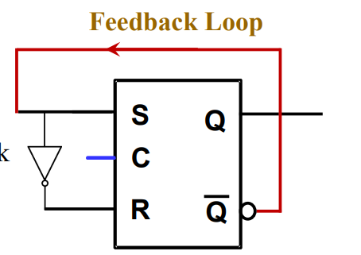
为了解决此问题，我们希望暂时地打断输出到输入的回路。于是，可以用Master-slave flip-flop和edge-triggered flip-flop来替代单纯的latch：
- Master-slave flip-flop：一种level-triggered（电平触发）的触发器
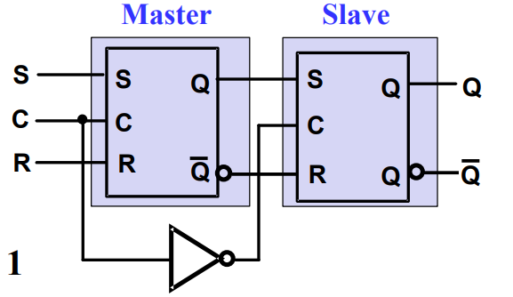
Master负责在Clock=1时读入输入数据，Slave负责在Clock=0时接收Master读入的数据，并反应在输出中。输出到输入的回路由于时钟信号的不同而被切断
缺点：MS触发器存在一次采样问题，在产生毛刺时不稳定
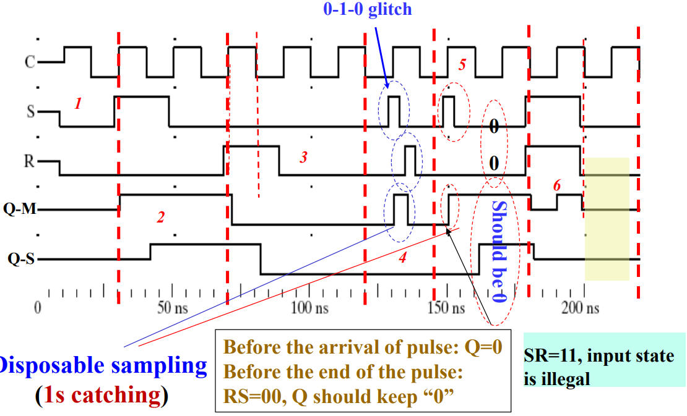
例：上图中，第一个glitch来自S，但随后被R的glitch抵消，所以仅仅Q-M出现一段毛刺，无大问题；但S的第二个glitch则直接导致Q-M由0变1，最终反映到Q-S输出中
我们希望毛刺不会影响最终结果，即避免一次采样问题。于是会考虑2种solution：
-
减少输入数量，将SR触发器改为D触发器
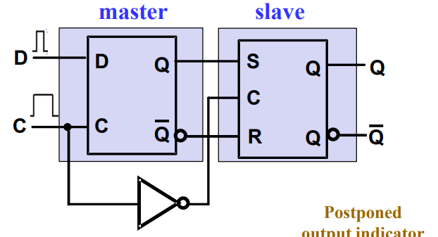
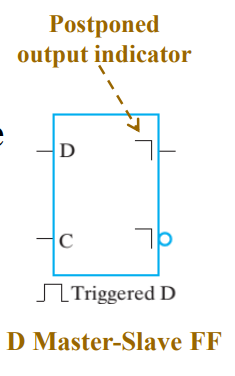
采用D触发器，输出的变化取决于脉冲负边沿（即clock由1变0）时的输入信号；
当然，也有negative-level triggered（输出变化取决于脉冲正边沿）的D触发器
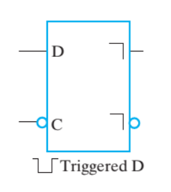
-
减少采样窗口（时间），采用边沿触发(edge-triggered)而非电平触发，这就是接下来要讲的边沿触发器
- edge-triggered flip-flop：一种电平边沿触发的触发器
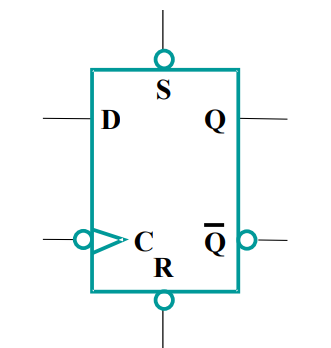
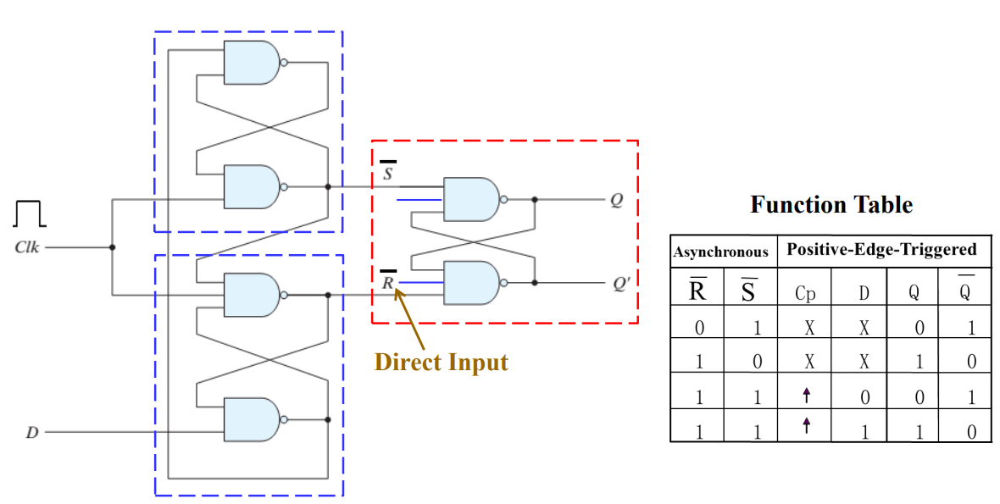
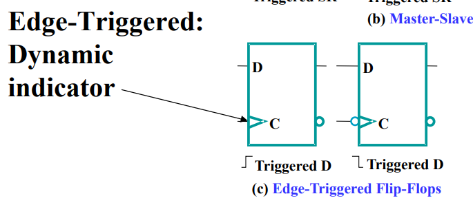
边沿触发器也可以强行实现异步，即R或S置0时，不管clock信号如何，直接进入reset或set
- flip-flop参数
-
setup time:在时钟脉冲到来前需要将稳定的输入信号维持一定时间，叫做set up time，否则会使触发器陷入亚稳态
-
hold time:在时钟脉冲到来后需要维持一段时间稳定的输入信号，使触发器充分采样
-
propagation delay:类似于门电路中的传播时延，只不过此处在时序电路中是时钟触发边沿开始到输出变化所需时间
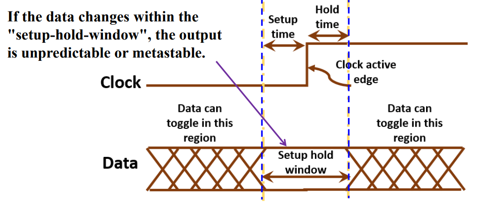
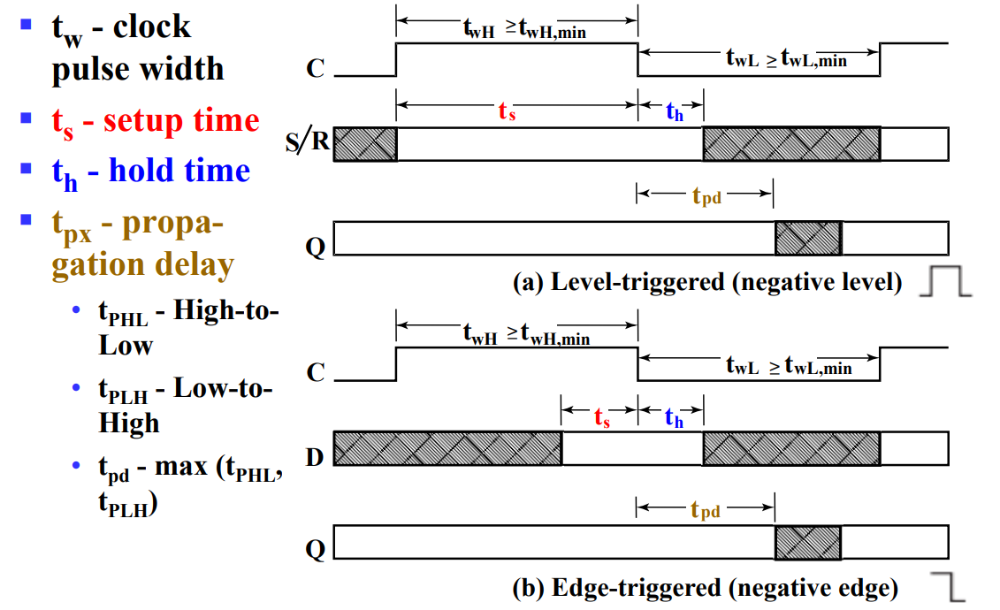
note:
setup time对于MS触发器，即电平触发来说，需要等于整个脉冲宽度；而对于边沿触发来说，只需要在脉冲结束前一小段时间即可；
hold time一般小于传播延迟，也经常设为0；
3. 优化latch和flipflop的大致思路(Big picture)¶
有时间再总结一下吧......
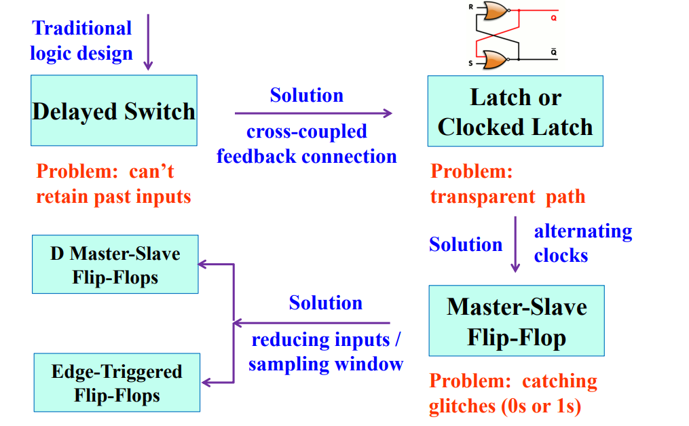
Sequential circuit analysis¶
- 总体模型 1. 当前状态(current state)：存储在一系列的flipflop中，即在 t 时刻的状态 2. 下一状态输入(next state input)：= 当前状态 (current state)+ 输入(input) 3. 下一状态(next state)：= 由下一状态输入决定 ，即在(t+1)时刻的状态 4. 输出：= 当前状态 + 输入
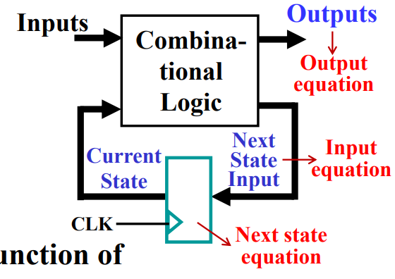
- 时序电路的分析包括
-
分析功能：用状态表、状态图（状态机）、输入输出表达式等方式进行电路功能的分析
-
确定时间限制(timing constraints)。配合上图进行理解，即整个电路从next state input在时钟触发边沿被接收到下一个next state input准备就绪所需的最长时间，这期间信号需要经历flipflop、组合电路模块，最终传到时序电路的输入
-
分析功能的基本步骤：
- 得到输入方程、输出方程、下一状态方程
- 根据方程列出状态表（有状态变量的真值表），其中输入包括input、present state；输出包括next state、output。state的描述包括所有flipflop的输入和输出
- 根据状态表画出状态图(state diagram)
- 分析电路性能，验证正确性，包括self recovery capability and draw the timing parameter？
例子：
- 步骤1：得到方程
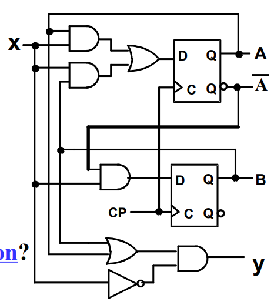
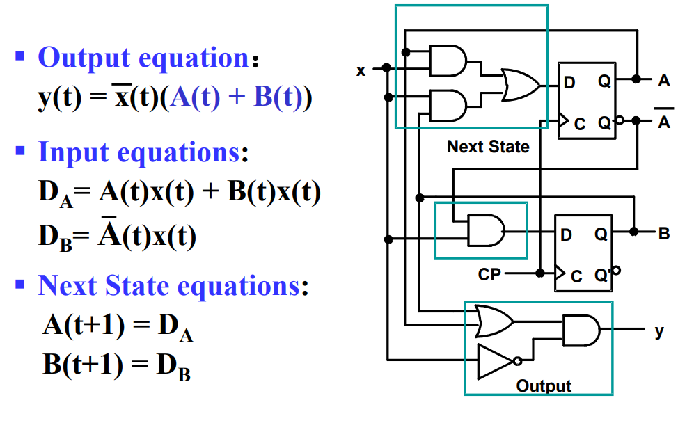 上图中，A(t)、B(t)为当前状态变量，x(t)为输入；y(t)为输出，A(t+1)、B(t+1)为下一状态
- 步骤2：画出状态表
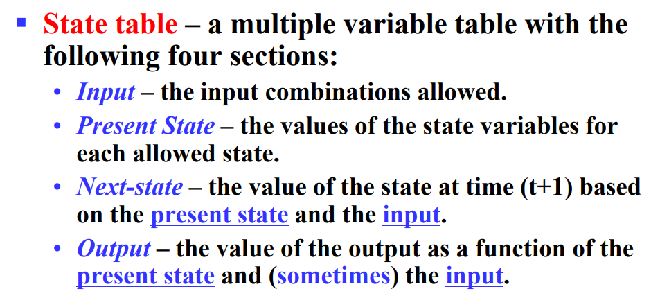
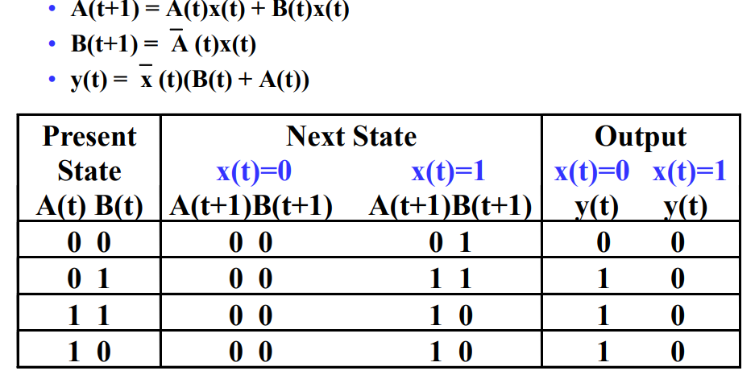
用格雷码和二维表以便更好的与卡诺图进行匹配
- 状态图：状态图由3部分组成
- 圆圈表示一个状态,圆圈上标有状态名or状态编码
- 有向弧表示由当前状态向下一状态的转移
- 每一段有向弧上的标签包括对应的input，有时会包括输出(mealy)；圆圈内的标签表示特定状态的输出(moore)
根据影响输出的因素，可以将状态图分为米勒型(Mealy type machine)和摩尔型(Moore type machine)
- 米勒型机器的output = input & present state，因此ouput标在有向弧上
- 摩尔型机器的output仅取决于present state，因此output标在圆圈里。当前状态确定，output也就确定
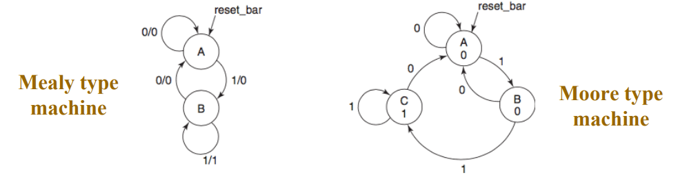
对于上面的例子来说，它适合用米勒型表示：
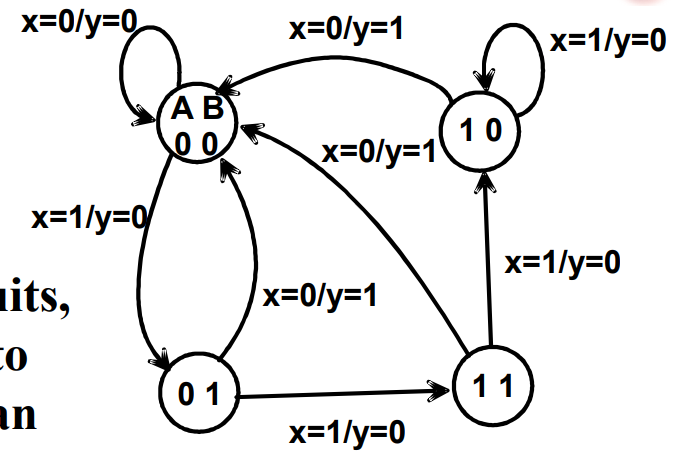
- 等价状态：若两个状态对任意一种input，得到的next state和output都一样，那么这两状态等价。等价状态的出现允许我们将其合并成一个状态，减少不必要的状态数量
- Moore and Mealy模型
两种电路模型，就是上述的两种机器类型
摩尔型：有向弧上的标签格式为：input
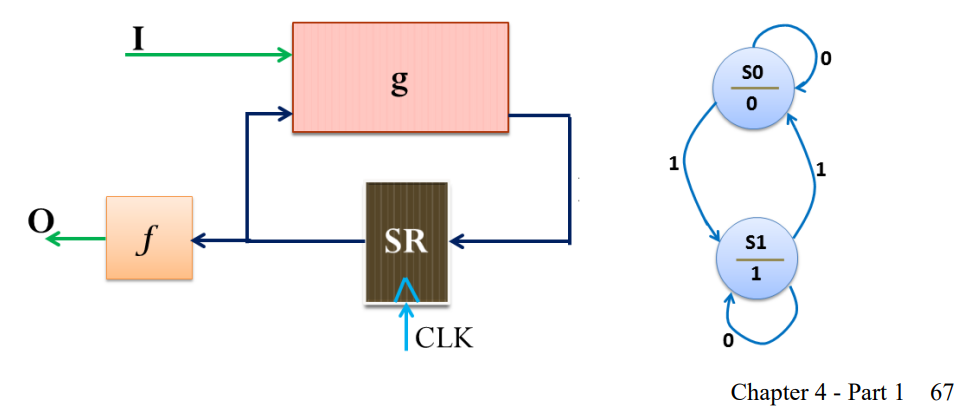
米勒型：有向弧上的标签格式为：input/output
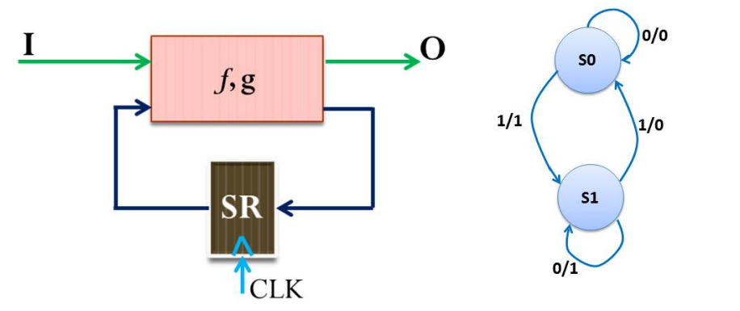
- 时限分析(Timing Analysis of Sequential Circuits)
时限的分析能够确定电路的最高而不会出错的频率
时限的成分：
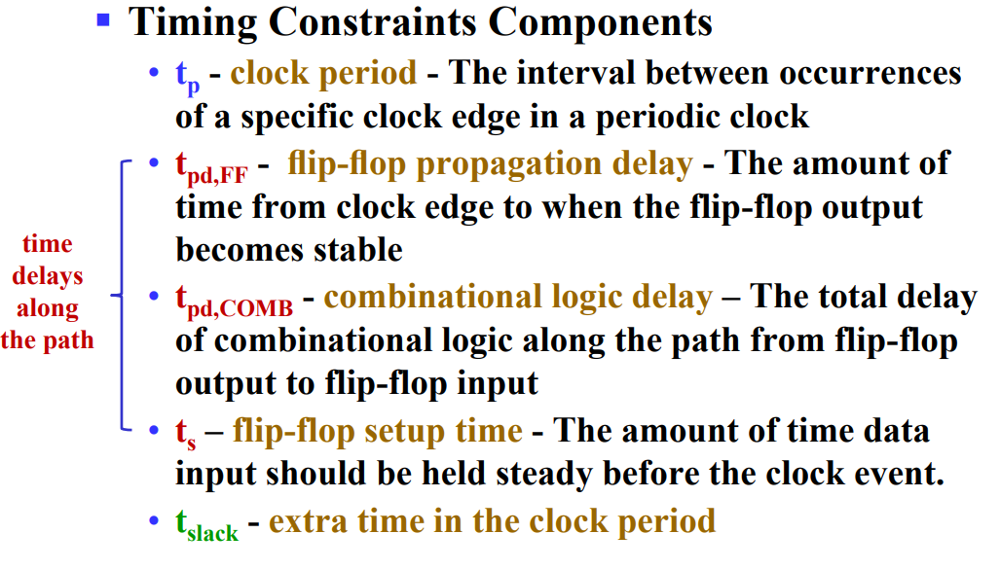
松弛时间(slack time)为电路时限提供了一定的选择空间
JK Flipflop¶
和MS主从触发器类似，除了J=K=1（禁用态）是允许的，此时output会翻转，
T Flipflop¶
分析：Characteristic Table、Characteristic Equation，给定input和present state，写出next state
设计：Excitation Equation，对于特定的present state、next state组合，需要什么样的input
FlipFlop转换技术
Chap6 寄存器和寄存器传输¶
寄存器是在触发器基础上添加一些新功能
控制信号：load
-
load作为时钟的使能信号，\(gated\ clock = clock + \bar{load}\)
-
load作为选择信号，选择store(remain)还是load(update)
Datapath and Control unit¶
Register transfer operation
- set of register
- elementary operation
- control of operation
microoperation:
transfer model:
multiplexer, dedicated...
不同功能的register
counter、
synchronous BCD counter：self healing ability，优化后的正确性验证
一个寄存器单元的需求包括：
- 寄存器功能
格式：条件：寄存器A <- 运算表达式
-
输入控制信号
-
输入数据
输入来源即运算表达式
寄存器单元设计方法：
-
MUX方法：不同控制信号“或”起来接到load
-
时序电路设计法：
Chap7 Memory basics¶
内存定义：
内存架构：
Memory depth(words)：地址数量，又称地址宽度？
Memory width：每个地址中存储的数据有几位，也就是bits per word
Memory size：memory_Size = memory_Depth * memory_Width
例：2K*8
内存块的结构：
- 片选信号(Chip select / Chip enable)：使能内存块
现实中，内存是多块内存芯片堆叠起来的